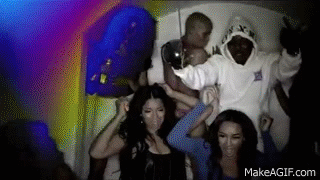
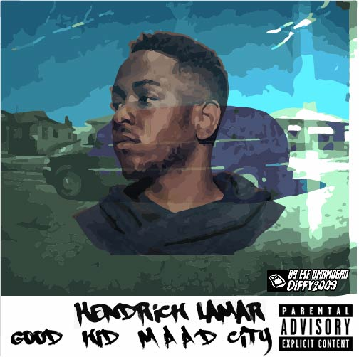
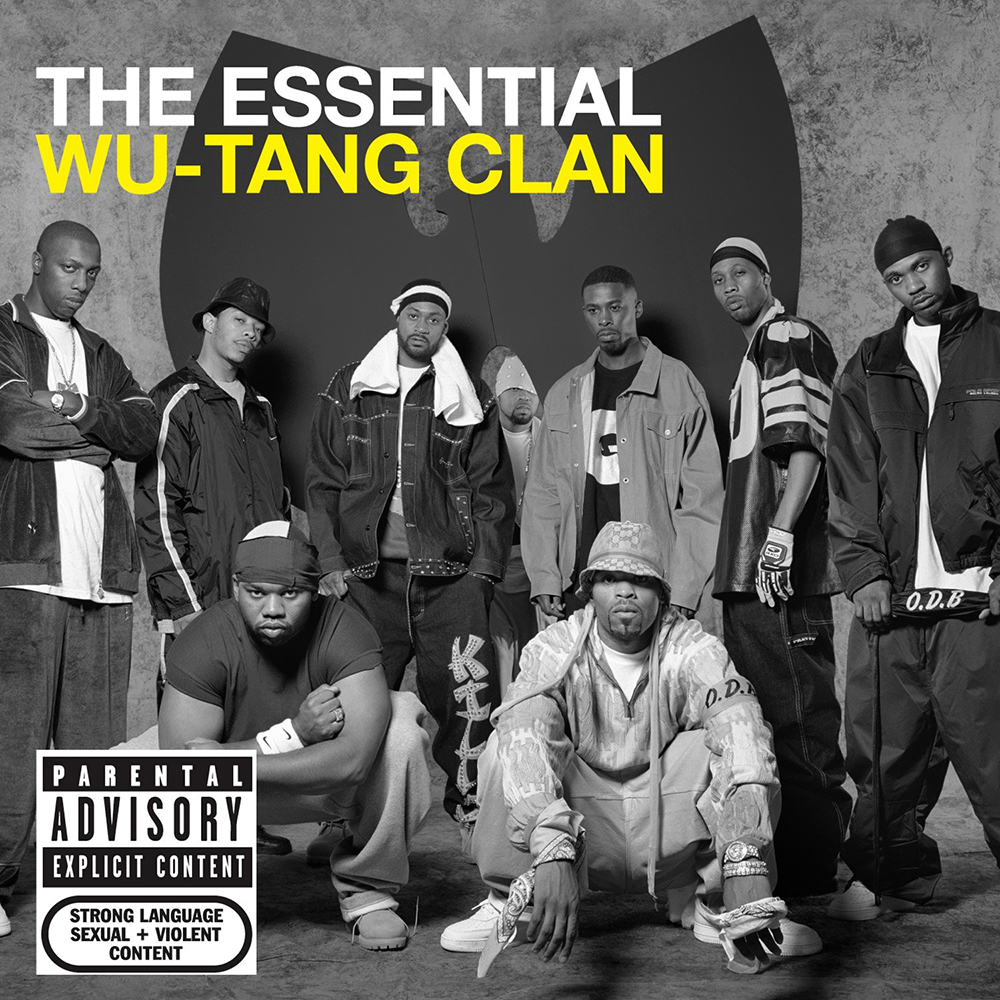
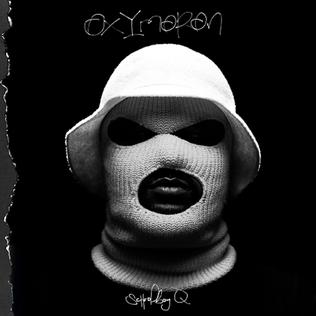
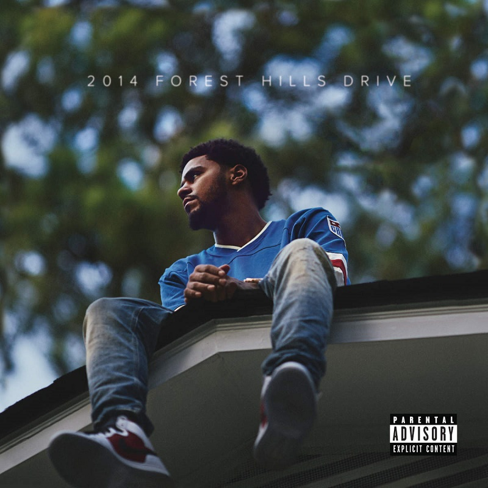
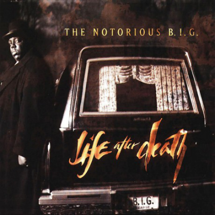
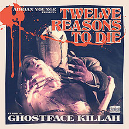

|
|
|
Understanding
Underground hip hop is an umbrella term for hip hop music outside the general commercial canon. It is typically associated with independent artists, signed to independent labels or no label at all. Underground hip hop is often characterized by socially conscious, positive, or anti-commercial lyrics. "The Underground" also refers to the community of musicians, fans and others that support non-commercial, or independent music. Music scenes with strong ties to underground hip hop include alternative hip hop and horrorcore. Many artists who are considered "underground" today were not always so, and may have previously broken the Billboard charts. Their performances are held anywhere, such as outdoors or in restaurants. Meet and greets are held in different cities. . There the fan can buy clothing from the artist’s clothing line or they can purchase tickets for future concerts. Ticket prices range depending on the location, some artists have VIP passes, allowing the fan to have access to the stage and to meet them after the show. Some artists make their own clothing line to sell gear and use the profit to continue making shows. Underground artists are usually found in YouTube or SoundCloud. Lastly, underground artists typically do everything themselves whether it’s making songs, preparing shows, or selling gear. |
Origins In hip hop's formative years, the vast majority of the genre was underground music, by definition. Although the Sugarhill Gang gained commercial success in 1979, most artists did not share such prominence until the mid-1980s. Ultramagnetic MCs debut album Critical Beatdown is seen as one of the earliest examples of "underground hip hop". It was described that the album was characteristic of what would later be known as "underground hip hop". New York underground rapper Kool Keith received notable success with his album Dr. Octagonecologyst, gaining more attention than any contemporary independent hip hop album "in quite a while". During the mid 1990s an underground hip-hop movement emerged in Los Angeles California as a response to the commercial rap music industry's unwavering commitment to gangsta rap imagery and themes as shown in the article 'Cheaper than a CD, Plus We Really Mean It': Bay Area Underground Hip Hop Tapes as Subcultural Artefacts.  |
|
Kendrick Lamar  |
Wu-Tang  |
Schoolboy Q  |
|
J-Cole  |
Notorious B.I.G  |
Ghostface Killa  |